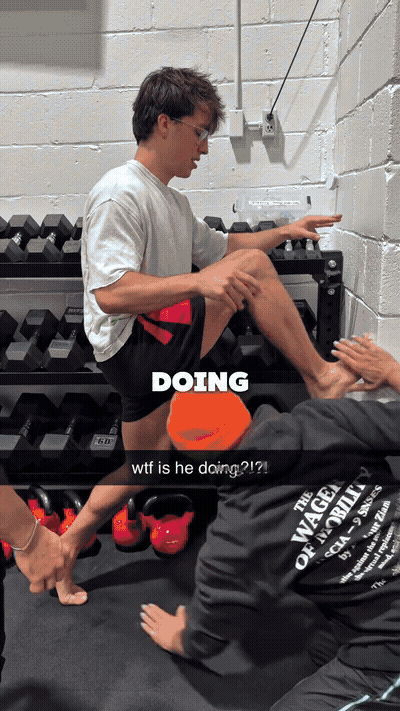
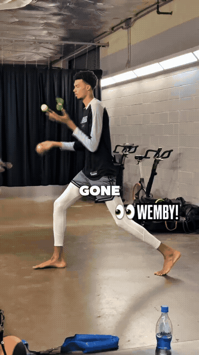
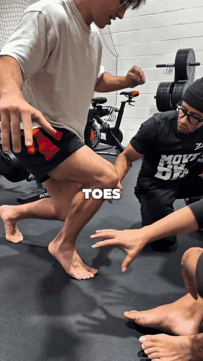
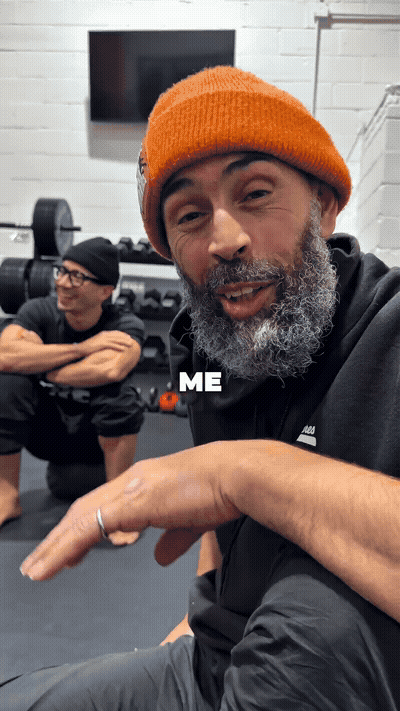
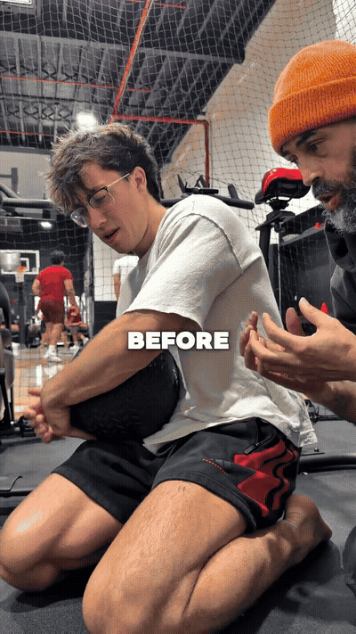

short, close split stance; the stated cue is to grip the floor with the toes and establish a strong base

the coach shows pronounced foot flexibility; this is demonstrative rather than a complete drill instruction

a wall-supported position, but the camera does not establish a complete repeatable setup

the creator describes pressing the toes through the floor while keeping tension through the chain

shown briefly; the exact loading, target, and safe progression are not specified